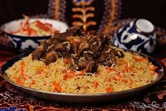

Pilav Recipe
Home

Description
Turkmen pilav is a traditional rice dish made by cooking rice together with meat,
onions, carrots, and aromatic seasonings. It is known for its rich flavor, and important place in Turkmen cuisine
Ingredients
- Rice
- Meat
- Onions
- Carrots
- Oil
- Water
- Garlic
- Seasonings mix
Steps
- Heat oil and cook the meat until lightly browned.
- Add chopped onions and carrots, then cook until softened.
- Pour in water, season, and let the meat simmer until tender.
- Add the rice and cook until the liquid is absorbed and the rice is fully done.